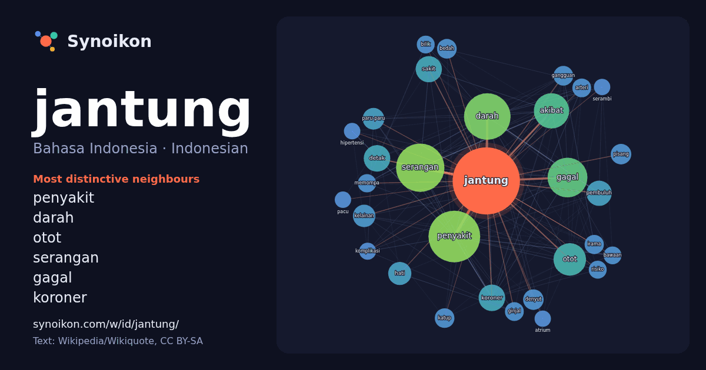

Bahasa Indonesia · Indonesian · popular word
jantung
“heart” · The words found around it in 1125 instances from Indonesian Wikipedia, Wikiquote.

Most distinctive neighbours
- penyakit 67×
- darah 63×
- otot 49×
- serangan 48×
- gagal 43×
- koroner 40×
- detak 40×
- pembuluh 34×
- kelainan 28×
- akibat 27×
- denyut 25×
- paru-paru 25×
- pisang 22×
- katup 22×
- bedah 21×
- irama 20×
- memompa 20×
- arteri 20×
- ginjal 19×
- bilik 19×
× = how many times more often than in general Indonesian Wikipedia text.
Most frequent neighbours
- penyakit 159
- serangan 139
- darah 129
- gagal 94
- akibat 74
- otot 63
- detak 42
- koroner 42
- meninggal 42
- sakit 41
- pembuluh 38
- hati 32
- kelainan 30
- paru-paru 28
- menyebabkan 27
- denyut 25
- pisang 25
- memiliki 24
- tekanan 24
- bedah 23
In context
- metabolisme. Istilah kardiak berarti berhubungan dengan jantung, dari kata Yunani cardia untuk jantung. Jantung adalah salah satu organ manusia yang berperan dalam Wikipedia snippets · Jantung
- Serangan jantung atau infark miokardial adalah terhentinya aliran darah yang menuju ke jantung, dan mengakibatkan sebagian sel jantung menjadi mati. Penyebab Wikipedia snippets · Serangan jantung
- Jantung pisang adalah bagian dari pohon pisang yang berbentuk seperti jantung. Keberadaan jantung pisang berasal dari pertumbuhan bunga pada pohon pisang Wikipedia snippets · Jantung pisang
- (disingkat EKG), rekaman aktivitas listrik jantung melalui siklus jantung berulang. Ini merupakan elektrogram jantung yang merupakan grafik tegangan listrik Wikipedia snippets · Elektrokardiografi
- dijuluki 'Soekarno Kecil'. Dia pernah mengalami serangan jantung dan operasi bypass jantung. Mahathir lahir di No. 18, Lorong Kilang Ais, Seberang Perak Wikipedia snippets · Mahathir Mohamad
- Otot jantung atau adalah otot tidak sadar yang membentuk miokardium, yaitu dinding jantung di antara perikardium dan endokardium. Otot jantung adalah Wikipedia snippets · Otot jantung
- Glikosida jantung adalah golongan senyawa organik yang meningkatkan kekuatan keluaran jantung dan menurunkan laju kontraksinya dengan menghambat pompa Wikipedia snippets · Glikosida jantung
- Bedah jantung atau bedah kardiovaskular adalah pembedahan pada jantung atau pembuluh darah besar yang dilakukan oleh ahli bedah jantung. Bedah ini sering Wikipedia snippets · Bedah jantung
More Indonesian words
- air
- anjing
- bahasa
- emas
- iklim
- jembatan
- kebenaran
- kehidupan
- kekuasaan
- keluarga
- kematian
- kereta
- kerja
- kesehatan
- kesenian
- kucing
- lingkungan
- makanan
- sains
- sejarah
- tuhan
- uang
Precomputed on 2026-10-09 with default settings (±5 words, medium corpus). The interactive map can refresh it with live data.